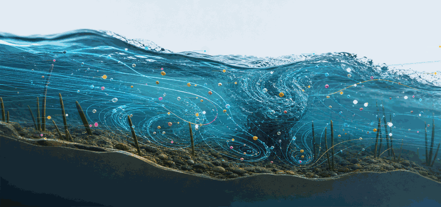

A GPU-accelerated Eulerian–Lagrangian framework for simulating the transport, dispersion, and fate of microplastic particles in turbulent open-channel flows, with and without vegetation.
⌄Microplastics persist in rivers, channels, estuaries, and coastal waters. Predicting where they travel, and where they accumulate, requires physics-based models that capture turbulence, buoyancy, and vegetation effects without the cost of fully resolved CFD-DEM simulation.

Microplastic particles advecting through a vegetated open-channel flow.
Between simplified tracer models and computationally expensive fully resolved simulations sits a practical middle ground: dominant physics, GPU efficiency.
Carrier flow computed with OpenFOAM using a vegetation-aware RANS turbulence model, capturing momentum loss and turbulence structure inside canopies.
A custom Python/CuPy Lagrangian solver advances every particle individually: force-based, massively parallel, built for scenario testing at scale.
Drag, buoyancy, added mass, Saffman lift, stochastic turbulent dispersion, and wall interaction: the forces that decide where a particle ends up.
Evaluated against laboratory channel-flow measurements across no-vegetation, low-vegetation, and high-vegetation configurations.
Breakthrough curves, particle distributions, velocity-profile comparisons, and animation workflows, straight from simulation to figure.
Efficient enough for scenario testing in rivers, channels, and coastal systems, where the microplastic question actually lives.
OpenFOAM computes the turbulent, vegetation-affected carrier flow.
Microplastic particles are released with realistic size, density, and buoyancy.
The CuPy solver integrates forces on every particle in parallel.
Breakthrough curves and distributions are compared with lab data.
The full solver, OpenFOAM case setups, validation scripts, and plotting workflows will be released in this repository alongside the publication.
If you use this repository, the numerical codes, or the generated data products in your research, please cite:
@misc{microplastic_modeling,
author = {Goodarzi, Danial and Mohammadian, Majid},
title = {Microplastic Modeling in Water Systems: Numerical
Codes for Microplastic Transport and Dispersion},
year = {2026},
url = {https://github.com/HydroCFD/microplastic_modeling},
note = {GitHub repository}
}
Postdoctoral researcher in fluid mechanics, environmental hydraulics, CFD, and microplastic transport. Lead developer.
Professor, Department of Civil Engineering, University of Ottawa. Academic supervisor and research advisor.